La cause : toutes les créatures ailées utilisaient la même rotation pour replier leurs ailes. Or chaque modèle a ses ailes dans une position de départ différente (relevées, en V, à plat, tournées…) : la même rotation donnait des ailes tordues, plantées dans le sol ou dressées en travers.
La correction : pour chacune des 38 créatures ailées, je mesure sa vraie aile (direction de l'épaule vers le bout, et sens de la surface), puis je calcule la rotation qui l'amène dans une pose naturelle :
En vol, rien ne change : les ailes s'ouvrent à l'horizontale et battent comme avant. Au repos, elles gardent un petit frémissement de temps en temps.
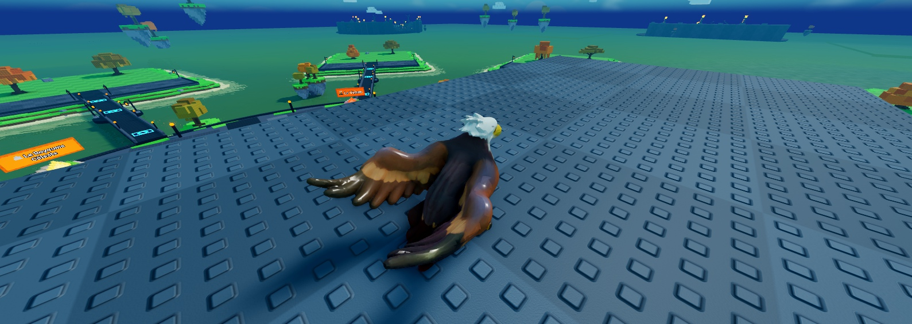
Avant : aile gauche tendue en travers
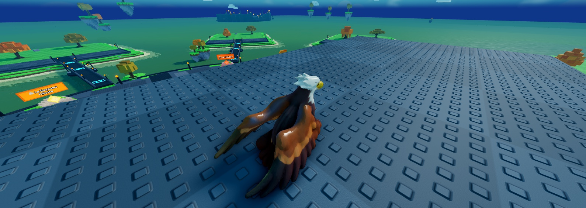
Après : les deux ailes rabattues vers l'arrière
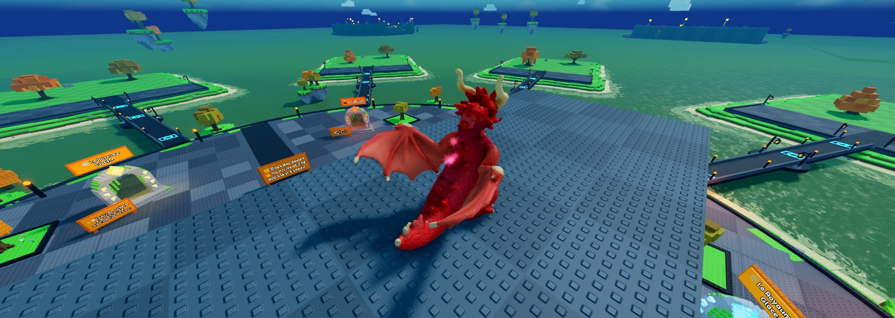
Avant : aile dressée à la verticale
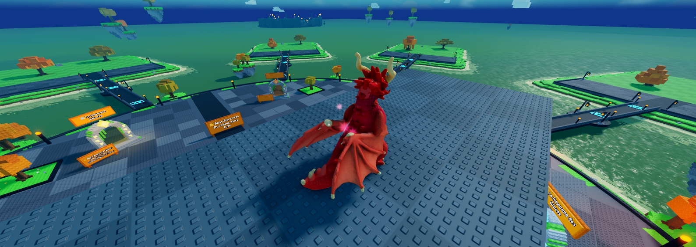
Après : ailes repliées contre le corps
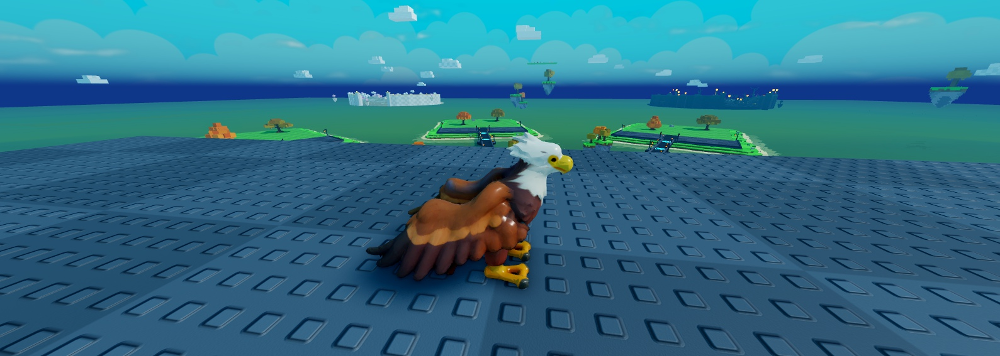
Aigle de profil
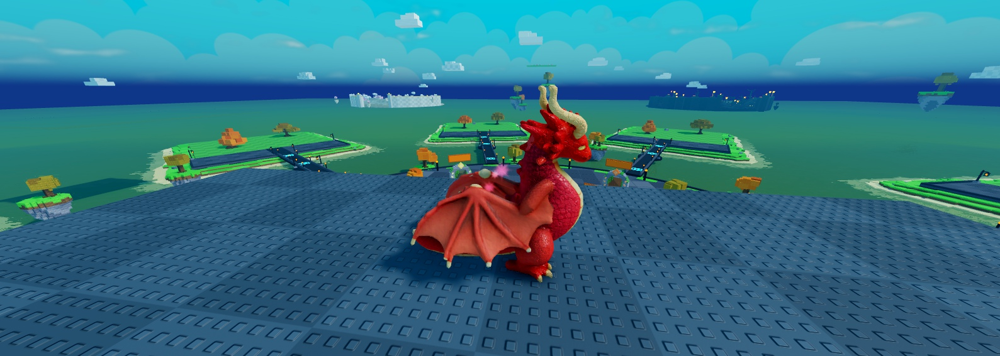
Dragon de profil : l'aile se plie le long du flanc
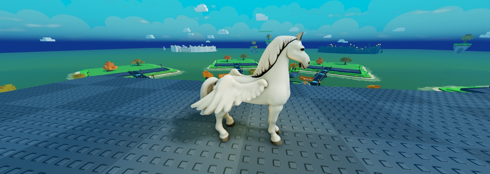
Pégase
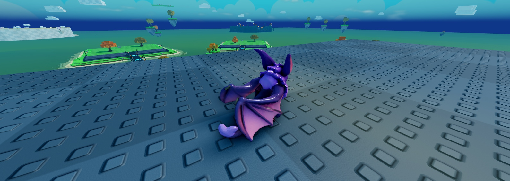
Chauve-Souris
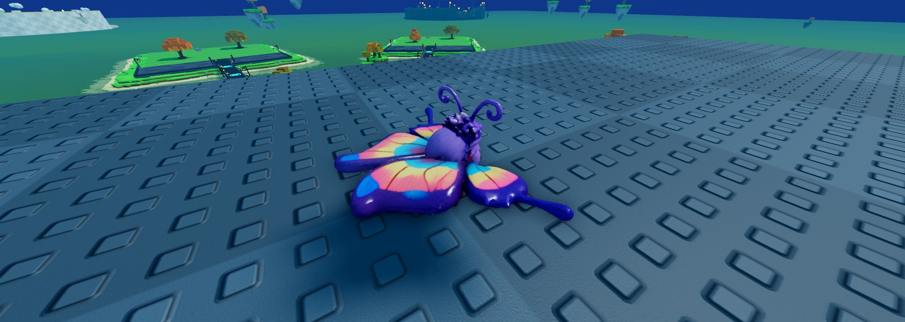
Papillon : ailes à plat sur le dos
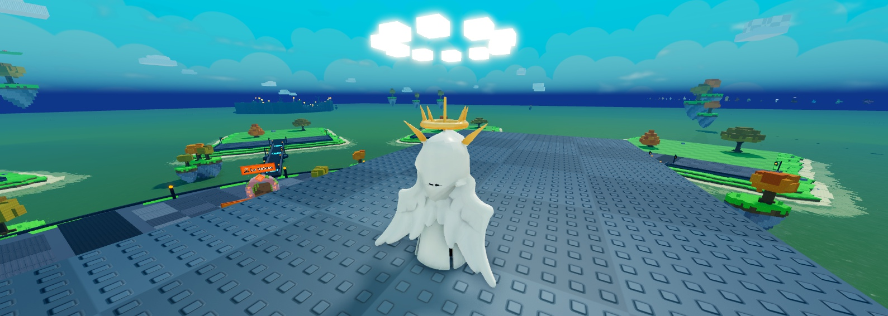
Ange Lumineux : ailes tombantes
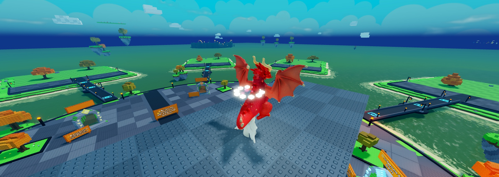
En vol : inchangé, ailes ouvertes